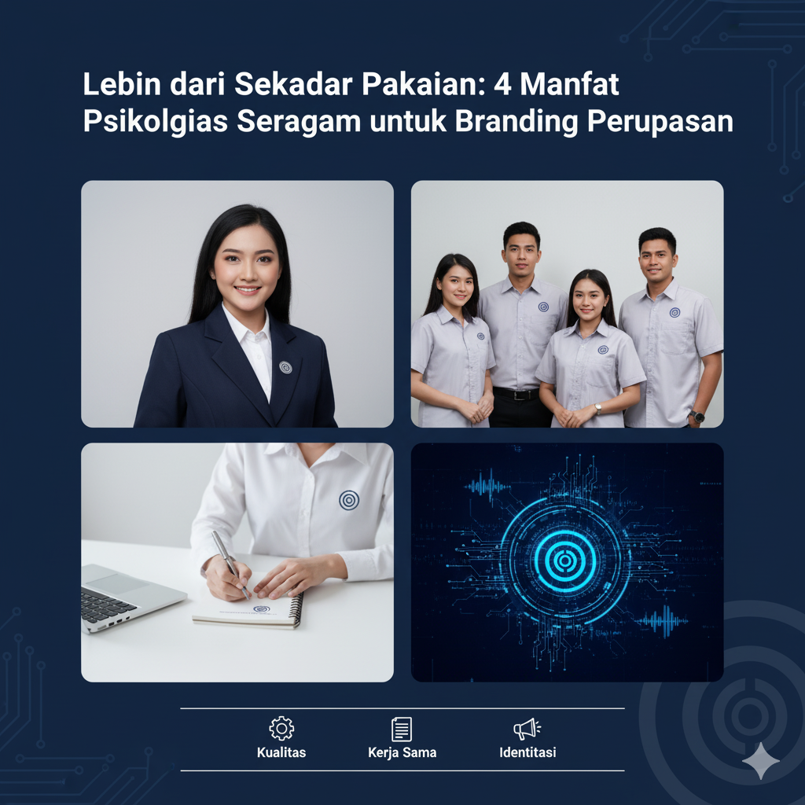

Lebih dari Sekadar Pakaian: 4 Manfaat Psikologis Seragam untuk Branding Perusahaan
Ditulis oleh Tim Konveksi | 29 Oktober 2025

Ketika banyak orang memikirkan "seragam", kata yang mungkin muncul adalah "kewajiban" atau "keseragaman yang kaku". Namun, bagi perusahaan yang visioner, seragam adalah salah satu alat branding paling halus namun paling kuat yang mereka miliki.
Fungsi seragam jauh melampaui identifikasi sederhana. Seragam bekerja pada tingkat psikologis, secara diam-diam membentuk persepsi baik di dalam (karyawan) maupun di luar (pelanggan). Ini bukan hanya tentang pakaian; ini tentang menanamkan identitas.
Berikut adalah empat manfaat psikologis utama dari seragam yang berdampak langsung pada kekuatan brand perusahaan Anda.
1. Membangun Identitas Kolektif (Efek "Jersey Tim")
Secara Psikologis: Manusia memiliki kebutuhan bawaan untuk menjadi bagian dari sesuatu yang lebih besar dari diri mereka sendiri. Psikolog menyebut ini "Identitas Sosial". Ketika seorang karyawan mengenakan seragam, fokus mereka bergeser dari "saya" menjadi "kami".
Sama seperti jersey tim olahraga yang mengubah sekelompok individu menjadi satu unit yang kohesif, seragam perusahaan melakukan hal yang sama. Karyawan tersebut tidak lagi hanya "Budi, seorang teknisi," tetapi ia adalah "Budi dari [Nama Perusahaan Anda]". Ada rasa bangga dan kepemilikan yang muncul dari representasi kolektif ini.
Dampak pada Branding: Karyawan yang merasa menjadi bagian dari sebuah tim yang kuat lebih termotivasi dan lebih mungkin untuk bertindak sebagai duta merek (brand ambassador). Kebanggaan internal ini akan terpancar ke luar dalam setiap interaksi mereka dengan pelanggan, memperkuat citra brand Anda sebagai entitas yang solid dan terpercaya.
2. Menciptakan Kesetaraan dan Kohesi Tim
Secara Psikologis: Di lingkungan kerja, seragam berfungsi sebagai penyeimbang sosial (social equalizer). Seragam menghilangkan hambatan visual yang diciptakan oleh perbedaan status sosial-ekonomi, selera mode, atau bahkan hierarki jabatan.
Ketika semua orang mengenakan pakaian yang seragam (atau setidaknya seragam dalam palet dan gaya yang sama), itu mengurangi "kebisingan" visual dan potensi gesekan. Fokus bergeser dari penampilan individu ke tujuan bersama. Ini menumbuhkan rasa persaudaraan dan mempermudah kolaborasi.
Dampak pada Branding: Internal branding (budaya perusahaan) Anda sama pentingnya dengan external branding. Tim yang kohesif dan setara adalah tim yang lebih efisien. Pelanggan dapat merasakan ketika mereka berhadapan dengan tim yang kompak dan tidak terpecah-belah. Konsistensi internal ini akan menghasilkan layanan eksternal yang lebih konsisten, yang merupakan inti dari branding yang hebat.
3. Menanamkan Sinyal Kepercayaan dan Profesionalisme
Secara Psikologis: Otak kita terus-menerus mencari jalan pintas (heuristik) untuk membuat keputusan cepat. Seragam adalah salah satu jalan pintas visual terkuat untuk "kepercayaan" dan "kompetensi".
Coba bayangkan: Anda memiliki masalah perbankan. Anda akan lebih percaya menjelaskan masalah keuangan Anda kepada seseorang di bank yang mengenakan kemeja rapi berlogo resmi, atau seseorang yang memakai kaus oblong biasa?
Seragam bertindak sebagai sinyal non-verbal yang instan bahwa orang di depan Anda adalah perwakilan resmi yang terlatih dan dapat dimintai pertanggungjawaban.
Dampak pada Branding: Kepercayaan adalah mata uang dalam bisnis. Seragam adalah investasi langsung ke "rekening kepercayaan" pelanggan Anda. Bagi brand, terutama di industri jasa, teknisi, atau ritel, seragam adalah jaminan visual pertama Anda atas profesionalisme. Ini membuat pelanggan merasa aman dan yakin untuk berbisnis dengan Anda.
4. Menjadi "Papan Reklame Berjalan" yang Konsisten
Secara Psikologis: Ini terkait dengan "Efek Paparan Belaka" (Mere-Exposure Effect)—sebuah prinsip psikologis di mana orang cenderung mengembangkan preferensi untuk hal-hal hanya karena mereka akrab dengannya.
Setiap kali seorang pelanggan melihat logo, palet warna, dan gaya seragam Anda—baik di toko, di jalan, atau saat menerima layanan di rumah—itu memperkuat jejak merek Anda di benak mereka. Berbeda dengan iklan yang bisa dilewati, seragam adalah representasi merek yang hidup dan berinteraksi.
Dampak pada Branding: Konsistensi adalah kunci dari brand recognition (pengenalan merek). Seragam memastikan bahwa citra merek Anda ditampilkan secara konsisten di setiap titik kontak dengan pelanggan. Setiap karyawan menjadi "papan reklame berjalan" yang memperkuat identitas visual perusahaan Anda, membuatnya mudah diingat dan langsung dikenali di pasar yang ramai.
Kembali ke Blog